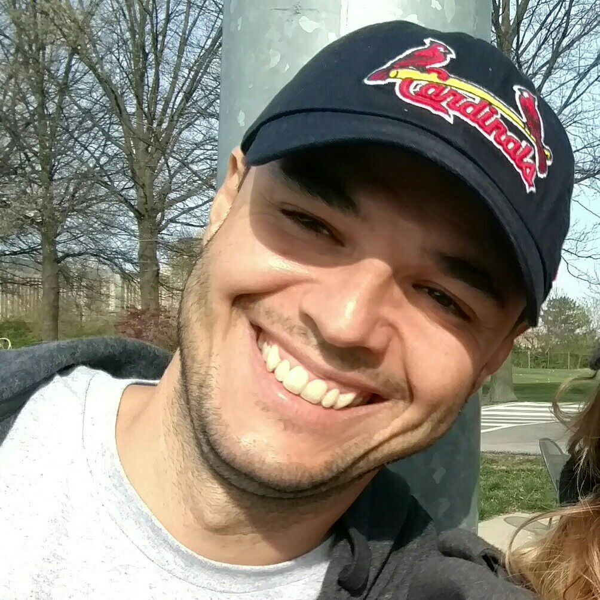
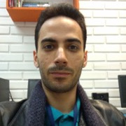

Sobre
A SECCOM - Semana Acadêmica de Ciência da Computação e Sistemas de
Informação - é um evento realizado pelo PET Computação e CALICO (Centro
Acadêmico Livre da Computação). Nos dias 3 a 7 de outubro de 2016 será
realizada sua XIX edição.
O objetivo da SECCOM é aprimorar, estender e explorar conhecimentos
relacionados à computação e áreas afins, oferecendo aos alunos e à
comunidade em geral palestras e minicursos sobre os mais variados temas de
pesquisa. Além disso, todos os anos diversas empresas são convidadas a
participar, o que promove a aproximação dos acadêmicos com o mercado de
trabalho.
Local
Universidade Federal de Santa Catarina. Florianópolis, Santa Catarina
Inscrição (Minicursos)
O formulário de inscrição já está aberto.
Cronograma
O cronograma será atualizado conforme os horários forem sendo confirmados.
| Segunda | Terça | Quarta | Quinta | Sexta |
|---|
| Horário | Bloco | Descrição |
|---|---|---|
| 10h10 | Minicurso: Introdução ao Linux | Minicurso introdutório de linux, comandos básicos para navegação e gerenciamento de arquivos, processos e permissões. |
| 13h30 | Temos Empatia por Robôs? E a Área Interação Humano Robô com isso? | Objetivo da palestra é apresentar a área de Interação Humano Robô e tratar dos aspectos relacionados ao desenvolvimento de Empatia, que a diferencia de outras áreas. |
| 14h30 | Programação Orientada a Agentes | A palestra apresenta, motiva e discute o paradigma de programação orientada a agentes. Agentes, nesse caso, são entidades de software que apresentam características que facilitam a resolução de vários problemas recentes, entre elas: autonomia, decentralização, concorrência, comportamento reativo e (ao mesmo tempo) orientado a objetivos. A partir de uma conceituação introdutória, a palestra irá ilustrar esse paradigma com a linguagem de programação Jason, procurando compará-las à outras linguagens. |
| 15h30 | Coffee-break | - |
| 16h00 | Você sabia que seu smartphone pode revelar quem você é? | No passado, as informações sobre os hábitos das pessoas eram obtidos através de surveys e entrevistas, como o Censo do IBGE. Hoje, em virtude da tecnologia móvel, as rotinas diárias reais das pessoas estão sendo registradas e analisadas constantemente. Estamos vivendo a era do movimento. Grandes volumes de dados da nossa rotina diária estão sendo coletados das mais diversas fontes. Ao utilizarmos um smartphone, a Google ou a Apple registram detalhadamente o caminho que percorremos, os lugares que visitamos, e o tempo que permanecemos nestes lugares. O Facebook, por exemplo, armazena os lugares onde estamos, com quem nos relacionamos, o que gostamos e o que pensamos. Pelo Twitter, registramos onde estamos e o que pensamos. Ainda, nas imagens das câmeras de segurança espalhadas pelo campus da UFSC, pela cidade, por edifícios comerciais, fica registrado o nosso movimento e nosso comportamento. São tantas as fontes de coleta de dados do nosso movimento cotidiano que a ciência está desenvolvendo diversos métodos para análise e mineração destes dados. Esta palestra tem como objetivo mostrar uma breve comparação dos diferentes tipos de dados de movimento e apresentar alguns trabalhos que vem sendo desenvolvidos na UFSC em parceria com Universidades da Itália e da Grécia como, por exemplo, classificação do perfil/comportamento de motoristas no trânsito, descoberta de indivíduos com comportamentos anormais em áreas de grande fluxo de pessoas, perfil social dos indivíduos, bem como a inferência de relacionamentos entre indivíduos com base nos seus padrões de encontro com outros indivíduos. |
| 17h00 | Armazenando séries temporais em bases de dados alternativas |
Uma série temporal (time series) é uma coleção de observações feitas sequencialmente ao longo do tempo. Se você está no mercado de IoT, esse tipo de dado será o que você vai armazenar cada vez que ler um sensor: data e valor. Por 10 anos, temos armazenado na Way2, bilhões de medições periódicas, em bancos de dados relacionais. Mas projetos cada vez maiores nos forçaram a repensar como trabalhar melhor com tantos dados desta natureza. Nesta palestra, vamos analisar as opções de armazenamento deste tipo de dados e compartilhar nossa evolução em busca de sistemas rápidos e eficientes. Começaremos por maneiras criativas de se usar um banco de dados relacional, depois passaremos por modelos NoSQL, TimeSeriesDatabases e até mesmo como criar uma própria base de dados específica orientada a colunas. |
| 18h00 | Coffee-break | - |
| 18h30 | Fusão de Dados Para Internet das Coisas (IoT) | Ambientes de Internet das Coisas (IoT) usualmente geram uma grande massa de dados. Se em ambientes restritos, como em uma Rede de Sensores sem Fio, o volume de dados já é uma preocupação, em ambientes integrados com a Internet, como o conceito de IoT, essa preocupação é ainda maior. Atualmente as estimativas são que 9 bilhões de dispositivos estejam conectados a Internet e que este numero possa chegar entre 24 bilhões e 50 bilhões em 2020. O volume de dados que estes dispositivos podem gerar tanto no processo de armazenamento e processamento como no processo de transmissão são incalculáveis, pois teremos desde dados binários até dados multimídia. O consumo de energia envolvido nos dias atuais com todo o tráfego de dados na Internet no mundo é em torno de 5% de toda a energia produzida. Logo, processos de agregação e fusão de dados em sensores podem ajudar a diminuir e controlar estes dados em ambientes IoT. Nesta Palestra serão apresentados os principais desafios e oportunidades em Fusão de Dados para Internet das Coisas. |
| 13h30 | Criatividade Computacional | A palestra visa apresentar um panorama da área de criatividade computacional com ênfase nas suas aplicações mais notáveis, seus principais modelos e formas para integrar criatividade e inteligência computacional para resolver ou lidar com problemas de difícil modelagem. |
| 14h30 | Anotação semântica de dados na Web | Anotações semânticas associam (trechos de) objetos digitais (tais como passagens de livros, segmentos de imagens, trechos de vídeos ou séries temporais) a recursos de bases de conhecimento com semântica bem definida (tais como objetos, conceitos ou simplesmente palavras com certo significado). Esta palestra fornece uma visão geral dos principais conceitos e técnicas relacionados com anotação semântica de textos não estruturados e de dados espaciais e temporais (conteúdos de bibliotecas digitais, trajetórias de objetos móveis e postagens em mídias sociais), com ênfase em anotações apontando para recursos de ontologias, coleções de dados ligados (DBPedia, LinkedGeoData, etc.) e bases léxicas (WordNet, VerbNet, etc.). A palestra revisa alguns métodos e ferramentas para anotação semântica automática, desafios atuais e conclui com projetos do grupo de pesquisa em bancos de dados do INE/UFSC. |
| 15h30 | Coffee-break | - |
| 16h00 | Software Livre: Passado, Presente e Futuro | Nesta palestra, apresento um breve histórico do movimento Software Livre, suas motivações e líderes. Discutiremos a diferença entre software livre e software de código aberto, apresentaremos casos de sucesso da adoção de software livre no mercado e na ciência. Por fim, faremos uma discussão de um possível futuro para o que se entende pelas 4 liverdades. |
| 17h00 | Desenvolvimento Nacional de Hardware Criptográfico | O desenvolvimento de hardware de propósito geral é uma tarefa complexa por si só, quando adicionamos as proteções físicas necessárias em um hardware criptográfico, a complexidade é ainda maior. Essa apresentação apresenta as proteções existentes em um hardware criptográfico: evidenciação de abertura variação de tensão, variação de temperatura, sondagem, emissão eletromagnética e outras. A apresentação também demonstra quais os desafios de se desenvolver hardware criptográfico no Brasil. |
| 18h00 | Coffee-break | - |
| 18h30 |  Trabalho Remoto | A Toptal é uma empresa do Vale do Silício e que conta com desenvolvedores e designers espalhados no mundo todo. Sendo uma empresa 100% remota, acreditamos que é fundamental a nossa participação nas comunidades locais. Realizamos eventos mensalmente em Florianópolis e é a nossa primeira participação dentro da UFSC. Queremos trazer para o público da XIX SECCOM como é trabalhar remotamente atendendo ao mercado estrangeiro passando nossa visão e experiência sobre isto, quais os desafios e vantagens desta forma de trabalho. |
| 18h30 | Minicurso: Python |
Pré-Requisitos: Familiaridade com Terminal |
| 10h10 | Minicurso: Python |
Pré-Requisitos: Familiaridade com Terminal |
| 13h30 |  Uma abordagem fuzzy para o problema de recarga autônoma de robôs móveis | Um robô móvel autônomo deve ser o mais independente possível de uma intervenção humana. Grande parte fos trabalhos atuais se focam em modelar o comportamento do robô ignorando um fator importante: a gerência de energia. Um robô necessita monitorar sua energia enquanto executa tarefas diversas. Caso decida que precise recarregar, é necessário abortar a tarefa atual, desperdiçando o trabalho não cumprido. Para minimizar o desperdício de tempo e energia, é necessário decidir o momento mais oportuno para recarregar. Essa palestra explora o problema de recarga autônoma de robôs móveis, apresentando algumas abordagens da literatura e uma nova proposta de gerência de energia utilizando lógica fuzzy. |
| 14h30 | O Sistema Operacional Nanvix | Sistemas operacionais possuem um papel importante nos sistemas computacionais modernos. Eles estendem a funcionalidade do hardware e apresentam ao usuário uma máquina virtual que é mais fácil e amigável de ser programada. Sem sistemas operacionais, programadores teriam de se preocupar com as minúcias da máquina e gastar seu tempo implementando simples funcionalidades poderosas, atrasando assim o processo de desenvolvimento e aumentando o custo do software. Tendo em vista essa importância, o domínio do projeto e concepção de sistemas operacionais é certamente uma expertise valorizada. Nesse contexto, esse trabalho apresenta o Nanvix, um novo sistema operacional projetado para entusiastas que desejam masterizar esse assunto. Em contraste com os demais sistemas operacionais, o Nanvix é pequeno, moderno, possui uma arquitetura realística e apresenta uma documentação rica, entregando assim um ambiente propício para que entusiastas se preparem para hackear kernels de sistemas maiores no futuro. |
| 15h30 | Coffee-break | - |
| 16h00 | Você já se desafiou hoje? | O quanto você sair da sua zona de conforto pode te levar além do imaginável! |
| 17h00 | Utilização de agentes autônomos para o gerenciamento de ambientes de computação em nuvem | Nos últimos anos, o uso de computação em nuvem (CN) tem aumentado. Para atender o aumento da demanda, a infraestrutura necessária para criar e manter ambientes de CN cresce constantemente, o que impacta nos custos de gestão. Além disso, o processo de otimização desses ambientes é inviável de ser realizado por administradores, exigindo uma abordagem autônoma. Com o intuito de fornecer uma plataforma para gerenciar os ambientes de computação em nuvem foi criado o projeto Autonomiccs. O projeto fornece uma arquitetura para criar heurísticas utilizadas por agentes para selecionar servidores físicos para serem ativados ou desativados, mapear e realizar migrações de máquinas virtuais. Além disso, a plataforma Autonomiccs é capaz de distribuir o processamento e execução de ações de maneira transparente, utilizando a tecnologia de sistemas multiagente. A palestra aborda a criação da plataforma Autonomiccs, sua arquitetura e limitações e seus pontos de extensão. |
| 18h00 | Coffee-break | - |
| 18h30 | Inovação Oracle Cloud | Nesta apresentação vou compartilhar experiências e contar um pouco do mundo de Cloud Computing para os alunos da UFSC e mostrar as tendências de TI para os futuros profissionais dessa área. |
| 10h10 | Minicurso: Javascript |
Construindo do zero uma sistema com uma API REST, armazenamento em banco de dados e suporte a multiplos usuários com o mais moderno que o Javascript oferece.
Pré-Requisitos: Básico de programação (até funções) |
| 13h30 | Fog Computing: Um novo paradigma computacional? | Nesta palestra vamos abordar os desafios relativos ao processamento paralelo e distribuído, armazenamento e big data sob um prisma, de uma nova de abordagem de alto desempenho local, denominada de fog computing. A ideia é apresentar o diferencial da abordagem de fog computing com relação a outros paradigmas como cluster e cloud computing. |
| 14h30 | Teste de software: um dia você precisará dele | A palestra tem por objetivo apresentar o (nem sempre tão) maravilhoso mundo do Teste de Software, tratando dos principais conceitos envolvidos, contextos de aplicação e técnicas para criação e execução de testes em sistemas. |
| 15h30 | Coffee-break | - |
| 16h00 | Introdução a Lean Startup |
- O que é Lean Startup? - Sobre Eric Reis (Criador e Autor); - Como surgiu; - O que é o famoso MVP; - Como você pode aplicar o processo Lean na sua Startup. |
| 17h00 | Utilizando a Unidade de Monitoramento de Desempenho em Sistemas de Tempo Real Multiprocessados | Arquiteturas multicore vêm se consolidando no mercado como um compromisso viável entre a microeletrônica a que hoje temos acesso e o desempenho que almejamos para nossas plataformas computacionais. A exploração sistemática do paralelismo de tais plataformas, tanto a nível de linguagem de programação, quanto a nível de sistema operacional, vem se mostrando efetiva quando o objetivo é uma computação de alto desempenho. Entretanto, os mecanismos de ocultação de latência presentes em tais arquiteturas, como predição de desvios, execução especulativa fora de ordem e caches, embora fundamentais para seu bom desempenho, implicam em uma plataforma com variabilidade por demais acentuada para a maioria das aplicações embarcadas. Neste contexto, o sistema operacional se apresenta como um mediador com potencial para exportar às aplicações o desempenho da plataforma ao mesmo tempo em que esconde muitos de seus não-determinismos. Nesta apresentação, mostraremos como a Unidade de Monitoramento de Desempenho (PMU) em multiprocessadores atuais pode ser utilizada para aumentar a previsibilidade e, consequentemente, a escalonabilidade de tarefas de tempo real. |
| 18h00 | Coffee-break | - |
| 18h30 | Use-Case 2.0 - Incorporando práticas ágeis aos Use-Cases | Desde que foi inicialmente proposta, em 1987, tendo sua notação posteriormente incorporada à UML, a técnica de Casos de Uso vem sendo aplicada com muito sucesso para coleta e análise de requisitos. Entretanto, com o passar dos anos, o crescimento das abordagens ágeis desafiou a adaptação dos Casos de Uso às demandas dos novos tempos da Engenharia de Software. Como resposta a essas demandas, Use-Case 2.0 incorpora princípios e práticas de gerenciamento e modelagem ágeis aos conceitos já comprovados de Casos de Uso. Nesta palestra serão apresentados: A motivação para o Use-Case 2.0; O histórico dos casos de uso; Os seis princípios; O conceito de Use-Case Slices, e; Como utilizar esses conceitos em um ambiente de desenvolvimento de software ágil |
| 18h30 |

Minicurso: Acessibilidade na Web |
Vamos ver como é na prática a vida de quem depende totalmente da acessibilidade para poder navegar na web e como fazer essas adaptações em nosso site para tornar o acesso de todos possível.
Pré-Requisitos: Saber o básico de HTML, mas mesmo se não souber vai conseguir entender como a acessibilidade funciona e as dificuldades por determinados tipos de usuários quando se trata de acessibilidade. É necessário levar fone de ouvido. |
| 10h10 | Minicurso: Git |
Será abordado tanto as funcionalidades de gerenciamento local com git e sua integração com um serviço de web hosting, para o gerenciamento remoto: o github. Todavia, o objetivo principal do minicurso é entender o que acontece por de trás de cada comando. Assim, muitos desastres e situações indesejadas poderão ser evitadas.
Pré-Requisitos: Saber utilizar o terminal do linux |
| 13h30 | Estratégia e-Saúde no Brasil | Cenário atual no Brasil, e-SUS Atenção Básica, SISMOB, desafios. |
| 14h30 | Jaulas Aninhadas | Muitas tarefas em processamento de geometria e simulação física se beneficiam de hierarquias em multirresolução. Uma importante característica para uma variedade de aplicações é que as malhas mais grosseiras enjaulem estritamente as mais finas, aninhando umas às outras. Técnicas existentes como decimação de malhas de superfícies ou extração de contornos de conjuntos de nível não provêm controle suficiente sobre as superfícies resultantes e não garantem aninhamento. Nós propomos uma solução que permite o uso de decimações e métricas de qualidade que dependem da aplicação. O método constroi a próxima malha mais grosseira da hierarquia usando uma sequência de decimação, fluxo geométrico e otimização que respeita colisões. Da mais grosseira para a mais fina, cada malha resultante completamente enjaula a próxima. O método é aplicável a uma variedade de superfícies com geometria e topologia complexas. Demonstramos a efetividade de nossas jaulas aninhadas para as seguintes aplicações: resolvedores em multigrid, detecção conservativa de colisões, discretização de domínios para simulação elástica e modelagem geométrica baseada em jaulas. |
| 15h30 | Coffee-break | - |
| 16h00 | Segurança da Informação nas Empresas |
- Dimensões da Segurança da Informação; - Papel dos profissionais de TI na Segurança da Informação; - Importância e perspectivas da Segurança da Informação. |
| 17h00 | Porquê você não deve iniciar sua Startup com Micro Services? | Um dos temas mais discutidos atualmente é a construção de novas aplicações utilizando a arquitetura de Micro Services. Os benefícios são muitos: separação de regras de negócio em cada contexto, resiliência e flexibilidade, alta escalabilidade, facilidade de realizar deploy, flexibilidade de escolha de tecnologias e por aí vai. O problema é que muitas startups estão começando seus projetos e construindo uma arquitetura em micro-services, esquecendo um ponto fundamental: seu maior problema é construir uma aplicação que os seus usuários irão ter interesse de usar. O objetivo desta palestra é destacar os pontos positivos e negativos dessa nova arquitetura e mostrar que você não deve começar um novo projeto com micro services, mesmo que você saiba que sua aplicação irá ficar grande o bastante para valer a pena. |
Palestrantes
-
Segunda - 10h10 Minicurso: Introdução ao Linux
PET Computação Página oficial [UFSC]
O PET – Programa de Educação Tutorial – é um dos programas apoiados pela SESu/MEC – Secretaria de Educação Superior do Ministério da Educação – e é destinado a grupos de alunos que demonstrem potencial, interesse, e habilidades destacadas em cursos de graduação. É formado por grupos tutoriais de aprendizagem, e busca propiciar aos bolsistas participantes, sob a orientação de um professor tutor e atuação coletiva, condições para a realização de atividades extracurriculares que favoreçam sua formação acadêmica global, contribuindo tanto para a integração no mercado profissional como também para o envolvimento no desenvolvimento de estudos em programas de Pós-Graduação. Outro grande objetivo do PET é a contribuição para a melhoria do ensino de graduação.
-
Segunda - 13h30 Temos Empatia por Robôs? E a Área Interação Humano Robô com isso?
Josué Ramos Página pessoal
Formação Academica: Graduação Eng Eletrica UFSC-1979; Mestrado em Robótica Unicamp 1986; Doutorado - Dirigiveis Robóticos UFSC 2002, com estágio sanduíche na Carnegie Mellon University (CMU); Pós Doutorados: 2004 - Veiculos Robóticos (CMU) e 2013 -Interação Humano Robô (CMU). Area de atuação: Desde 1983 é pesquisador ná área de robótica no CTI (Centro Tecnologia da Informação Renato Archer) do Ministério da Ciência e Tecnologia e Inovação. Atua em robôs manipuladores, veículos aéreos não tripulados, veículos robóticos terrestres, robótica pedagógica de baixo custo, e interação humano robô. Participou do Projeto AURORA (dirigivel robótico) que realizou um dos primeiros ôos de VANT no Brasil em 2000. Atualmente é Tecnologista Senior do CTI Renato Archer, pesquisador principal do projeto Fapesp Informações Não Verbais aplicado a um Robô Recepcionista, iniciado em 2014, que objetiva o desenvolvimento de atividades na área de Interação Humano Robô.
-
Segunda - 14h30 Programação Orientada a Agentes
Jomi Fred Hübner Página pessoal
Jomi F. Hübner é professor no departamento de Automação e Sistemas da Universidade Federal de Santa Catarina. Seu principal tema de pesquisa é a programação de Sistemas Multi-Agentes (SMA). Os principais projetos de pesquisa em que participa são: Jason (um interpretador para um linguagem de programação de agentes baseada no modelo Belief-Desire-Intention), Moise (um modelo e infraestrutura para organização de SMA) e JaCaMo (uma plataforma multidimensional para programação de SMA). Participou da organização de vários eventos (ProMAS@AAMAS 2012, WESAAC 2012, IEEE/WIC/ACM WI-IAT'11, LADS 2010@MALLOW 2010 , COIN 2008@AAMAS 08, Iberagents@IBERAMIA 2006) e comitês de programa (AAMAS, EUMAS, ProMAS, COIN, AT2AI, LADS, SBIA, RFIA, APLSA, SEAS) nas suas áreas de competência.
-
Segunda - 16h00 Você sabia que seu smartphone pode revelar quem você é?
Vania Bogorny Página pessoal
Vania Bogorny é professora do Departamento de Informática e Estatística da Universidade Federal de Santa Catarina desde Julho de 2009, e possui Bolsa de Produtividade em Pesquisa do CNPQ desde 2008. Possui doutorado (2006) e mestrado (2001) em Ciência da Computação pela Universidade Federal do Rio Grande do Sul e graduação (1995) em Ciência da Computação pela Universidade de Passo Fundo, tendo recebido da Sociedade Brasileira de Computação o prêmio de melhor tese de doutorado em Computação no Brasil no ano de 2007. Em 2014 realizou pós-doutorado no INRIA Sophia Antipolis, França; em 2008 realizou pós-doutorado no II/UFRGS e em 2007 realizou pós-doutorado na Universidade de Hasselt, Bélgica, no contexto do projeto europeu GeoPKDD, financiado pela União Européia. Em 2012 editou um livro sobre seu tema de pesquisa atual (Introdução a Trajetórias de Objetos Móveis). Em 2010 ministrou tutorial no tema de sua pesquisa em Mineração de Dados Espaciais no segundo maior congresso internacional na área de mineração de dados (IEEE ICDM). Desde 2009 tem projetos de Cooperação Internacional financiados pelo CNPq e União Européia. Nestes projetos estabeleceu parcerias de pesquisa com o CNR de Pisa/Itália, Universidade Ca’Foscari de Veneza/Itália e Universidade de Piraeus/Grécia.
-
Segunda - 17h00 Armazenando séries temporais em bases de dados alternativas
André Carlucci [Way2]
André Carlucci é co-fundador da Way2 Tecnologia, Microsoft Most Valuable Professional, Intel Innovator, Intel Black Belt Software Developer e organizador do DotNetFloripa. Tem 15 anos de experiência trabalhando em grandes projetos de TI no Brasil e na Europa. Atualmente está focado em arquitetura de software, desenvolvimento ágil, IoT e projetos open-source.
-
Segunda - 18h30 Fusão de Dados Para Internet das Coisas (IoT)
Alex Sandro Roschildt Pinto
Alex Sandro Roschildt Pinto é bacharel em Ciências da Computação (UFPel), Mestre em Ciências da Computação (UFSC) e Doutor em Engenharia Elétrica (UFSC). Realizou Pós-Doutorado no ICMC-USP. Atualmente é professor do curso de Engenharia de Controle e Automação da UFSC Blumenau. Já publicou mais de 50 papers (artigos em periódicos, capítulos de livro e artigos em eventos) e recebeu 3 prêmios IEEE.
-
Terça - 13h30 Criatividade Computacional
Elder Santos
Possui graduação em Bacharelado em Ciência da Computação pela Universidade de Caxias do Sul (2003), mestrado em Computação pela Universidade Federal do Rio Grande do Sul (2006) e doutorado em Computação pela Universidade Federal do Rio Grande do Sul (2010). Atualmente é professor adjunto da Universidade Federal de Santa Catarina. Tem experiência na área de Ciência da Computação, com ênfase em Inteligência Artificial, atuando principalmente nos seguintes temas: agentes, sistemas multi-agentes, ontologias e informática na educação.
-
Terça - 14h30 Anotação semântica de dados na Web
Renato Fileto
O professor Renato Fileto tem doutorado em Computação pelo IC/Unicamp, com estágio sanduíche no Georgia Tech (EUA), e pós-doutorado pelo ICMC/USP. Tem experiência em empresas e instituições de pesquisa e ensino superior, com mais de 60 artigos publicados e algumas contribuições para inovação na indústria. Sua área de pesquisa é bancos de dados, com foco em semântica para catalogação, recuperação, integração e análise de dados. Seus temas de pesquisa atualmente incluem anotações semânticas, contextos, sistemas baseados em conhecimento e extensões espaço-temporais e semânticas para data warehouses.
-
Terça - 16h00 Software Livre: Passado, Presente e Futuro
Melissa Weber Mendonça Lattes
Sou matemática de formação, com doutorado em Otimização e Análise Numérica, e uso programação no meu trabalho diariamente. Trabalho com diversas linguagens, entre elas Fortran, MATLAB, Python e C, com muito bash e LaTeX envolvido. Usuária de Linux desde 1998, de KDE desde 1999 e evangelista de Software Livre desde os primórdios da Internet.
-
Terça - 17h00 Desenvolvimento Nacional de Hardware Criptográfico
André Dexter Bereza [Kryptus]
André "Dexter" Bereza trabalha com segurança de sistemas computacionais há mais de 8 anos. Adquiriu o grau de Mestre pesquisando a segurança e auditoria de hardwares criptográficos e grau de Bacharel pesquisando o desenvolvimento de módulos de segurança criptográfica, ambos em Ciências da Computação pela UFSC. Trabalha como líder técnico de projetos na Kryptus Segurança da Informação de Campinas-SP. Lidera projetos de defesa cibernética, software embarcado, hardwares criptográficos, gerência de chaves criptográficas, segurança de redes, certificação digital, software de alto nível, desenvolvimento mobile, homologação de equipamentos de segurança da informação.
-
Terça - 18h30 Trabalho Remoto
Gilberto Garcia Jr [Toptal]
Gilberto Garcia Jr é autor do livro “Lift Application Development Cookbook” que foi publicado em 2013 pela PacktPub. Formado em Filosofia pela Universidade de São Paulo, fez seu primeiro estágio como programador em 1999 e nunca mais saiu da área de Tecnologia. Tem como expertise escopo, arquitetura, desenvolvimento de software e manutenção de aplicações web nas linguagens Scala, Java, Haskell, Ruby, Clojure, JavaScript. Trabalha como Desenvolvedor, Entrevistador Técnico e é o Lider da Comunidade da Toptal em Florianópolis, cidade pela qual é apaixonado.
-
Terça - 18h30 Minicurso: Python
Quarta - 10h10 Minicurso: Python
Tarcísio Eduardo Moreira Crocomo Currículo Lattes [UFSC]
Atualmente mestrando pelo PPGCC-UFSC, no Embedded Computing Lab (ECL), na área de otimização e eficiência energética. Formado em Ciência da Computação pela UFSC (2009-2013), foi membro do grupo PET Computação de 2010 a 2013. Trabalhou com desenvolvimento de software aplicativo para automação de modelagem e corte de peças de tecido, utilizando C++ e Python, na Audaces, de 2013 a 2015.
-
Quarta - 13h30 Uma abordagem fuzzy para o problema de recarga autônoma de robôs móveis
Msc. Fernando de Lucca Siqueira [UFSC]
Fernando é doutorando em Engenharia de Automação e Sistemas na Universidade Federal de Santa Catarina. Possui mestrado e bacharelado em Ciência da Computação na mesma instituição. Atua como professor no Senac SC e professor Substituto no Centro Universitário Municipal de São José. Seu foco atual de pesquisa é em data mining de dados espaço-temporais em Robótica Móvel.
-
Quarta - 14h30 O Sistema Operacional Nanvix
Pedro H. Penna
Pedro H. Penna é estudante de mestrado em Ciência da Computação na Universidade Federal de Santa Catarina (UFSC) e pesquisador no Laboratório de Pesquisa em Sistemas Distribuídos (LaPeSD). Recebeu seu título de Bacharel em Ciência da Computação pela Pontifícia Universidade Católica de Minas Gerais (PUC Minas) em 2015, com os prêmios de Láurea Acadêmica (Summa Cum Laude) e Aluno Destaque em Ciência da Computação pela Sociedade Brasileira de Computação (SBC). Pedro possui experiência em pesquisa na área de Sistemas Operacionais, Arquitetura de Computadores e Computação de Alto Desempenho, atuando pontualmente nos seguintes tópicos: Balanceamento de Carga de Trabalho; Mapeamento de Threads; Computação de Alto Desempenho e Eficiência Energética
-
Quarta - 16h00 Você já se desafiou hoje?
Júlia Machado [Anitas]
Idealizadora e fundadora do Anitas, formada em Comunicação, mas acabou trabalhando com gerência de projetos de software. Descobrindo como soldar componentes e programar, adora juntar as pessoas para aprender, cozinhar e mudar o mundo.
-
Quarta - 17h00 Utilização de agentes autônomos para o gerenciamento de ambientes de computação em nuvem
Rafael Weingärtner
Membro do PMC (Project management committee) e Committer do projeto Apache CloudStack. Trabalha a mais de três anos com ambientes de computação em nuvem criadas com a ferramenta de orquestração Apache CloudStack. Atuou como desenvolvedor Java Web para o projeto SAJ (sistema de automação da justiça) da empresa Softplan. Além disso, durante o mestrado, atuou como assistente de pesquisa para a Rede Nacional em Segurança da Informação e Criptografia (RENASIC). Também possui algumas certificações técnicas, como: Sun Certified Programmer para a Plataforma Java, SE 6 (CX-310-065); Oracle Certified Professional, Java EE 5 Web Component Developer (CX-310-083); A Oracle Certified Expert, Java Platform Enterprise Edition 6, Web Services Developer (1Z0-897).
-
Quarta - 18h30 Inovação Oracle Cloud
Rodrigo Oliveira [Supero]
Mais de 10 anos de profissão e especialização em produtos Oracle, atuação em projetos de concepção ou melhorias de sistemas aplicativos personalizados e soluçõs Oracle Cloud para empresas da região Sul e Sudeste do país. Certificado pelo PMI® como PMP® - Project Management Professional. MBA em Gerenciamento de Projetos, Gestão Empresarial e Bacharel em Sistemas de Informação, sólidos conhecimentos em gestão de projetos de sistemas aplicativos e implementação de produtos Oracle.
-
Quinta - 10h10 Minicurso: Javascript
Ranieri Althoff Página Pessoal [UFSC]
Ranieri é estudante de Ciência da Computação na Universidade Federal de Santa Catarina, trabalha com C++, Python e encontrou seu ambiente para desenvolvimento com Javascript. Defensor de uma web baseada em APIs e interfaces simples, desenvolveu o voucomerno.ru e os packages argon2 e sandra para Node.
-
Quinta - 13h30 Fog Computing: Um novo paradigma computacional?
Mário Dantas
Mario Dantas é Professor Titular do Departamento de Informática e Estatística (INE), do Programa de Pós-Graduação em Ciência da Computação (PPGCC) e Engenharia e Gestão do Conhecimento (PPGEGC), no Centro Tecnológico (CTC), da Universidade Federal de Santa Catarina (UFSC). Com doutorado em Ciência da Computação pela University of Souhtampton (UK), estágio pós-doutoral e visiting professor na University of Western Ontario (Canada). O Professor Dantas é autor de três livros e inúmeros artigos científicos publicados no Brasil, Alemanha, Áustria, Bélgica, Canadá, Chipre, Croacia, Estados Unidos, Finlândia, França,Grécia, Holanda, Inglaterra, Italia, Marrocos, México, Portugal, Rússia, Suíça, Tailândia e Tunísia nas áreas de redes de computadores, computação móvel e computação paralela e distribuída de alto desempenho. Em adição aos artigos, tem treze capítulos em livros editados nos Alemanha, Canadá, EUA, Holanda e Inglaterra sobre os tópicos de computação distribuída. Estes trabalhos renderam três prêmios internacionais e três nacionais. Mario Dantas foi Professor da Universidade de Brasília (UnB), além de ter trabalhado por mais de dez anos na Petrobrás (Departamento de Produção) e no Centro Tecnológico do Exército (Ctex), no suporte a ambientes de rede e ao desenvolvimento de aplicações distribuídas. Na UFSC têm atuado nos programas de Pos-Graduação de Ciência da Computação (PPGCC) e Engenharia e Gestão do Conhecimento (PPGEGC), cursos de especialização e graduação. Prof. Dantas já orientou inúmeros trabalhos de graduação, especialização, mestrado e doutorado em tópicos relativos à área de sistema de computação. Em adição, o Prof. Dantas tem atuado como consultor em diferentes projetos de pesquisa com a indústria nas áreas de redes, sistemas distribuídos, ambientes de alto desempenho e Internet of Things (IoT).
-
Quinta - 14h30 Teste de software: um dia você precisará dele
Nadjia Jandt Feller e-mail
Mestre em Engenharia de Software pelo Programa de Pós-Graduação em Computação – UFRGS (2015). Analista de TI no Centro de Processamento de Dados da UFRGS, atuando como Analista de Teste na Divisão de Teste e Conformidade (2013 - atual). Trabalhando na área de Teste de Software desde 2009, com especial interesse em Automação de Teste, Testes de Aceitação de Usuário, Testes Exploratórios, Testes Ágeis e Testes Baseados em Modelos.
-
Quinta - 16h00 Introdução a Lean Startup
Marco Burgin [Pixel]
Empreendedor e Co-Fundador da MinhaDietaOnline.com
-
Quinta - 17h00 Utilizando a Unidade de Monitoramento de Desempenho em Sistemas de Tempo Real Multiprocessados
Prof. Dr. Giovani Gracioli e-mail [UFSC Joinville]
-
Quinta - 18h30 Use-Case 2.0 - Incorporando práticas ágeis aos Use-Cases
Jean Carlo Rossa Hauck
Jean Hauck é doutor em Engenharia do Conhecimento e mestre em Ciência da Computação pela UFSC e graduado em Ciência da Computação pela UNIVALI. Adquiriu experiência prática na indústria liderando projetos de software para grandes clientes e com essa experiência, prestou consultorias nas áreas de Modelagem, Arquitetura e Melhoria de Processos. Em paralelo foi também professor na UNISUL e UNIVALI. Ministrou ainda diversas disciplinas de Pós-Graduação na UNISUL, UNIVALI, UNIPLAC, SOCIESC e outras. Foi pesquisador visitante no Regulated Software Research Centre - Irlanda. Atualmente é Professor no INE/UFSC e vice-coordenador do Grupo de Qualidade de Software - GQS.
-
Quinta - 18h30 Minicurso: Acessibilidade na Web
Lahana da Silva Lameira [JS4Girls]
Lahana da Silva Lameira é desenvolvedora front-end na Neoway, universitária de Sistemas de Informação e recentemente co-organizadora e docente voluntária no projeto JS4Girls de Floripa, um workshop com objetivo de atrair, capacitar e certificar cada vez mais mulheres para a área de tecnologia. Atua principalmente na criação/desenvolvimento de sistemas e telas web.
-
Michelle Frasson [JS4Girls]
Michelle Frasson (Mi) acadêmica de Sistemas de Informação, Data Quality na Neoway. Durante muito tempo tester, recentemente auxiliando no JS4Girls, evento voltado para o ensino de programação para mulheres. Atua diretamente na área de banco de dados, mas possui uma queda por web, principalmente web para todos, onde vê na prática todos os dias a web não pensada, prejudicar os usuários.
-
Sexta - 10h10 Minicurso: Git
Marcos Schead [Pixel]
Schead é estudante de Ciências da Computação na Universidade Federal de Santa Catarina. Começou a trabalhar no Laboratório Bridge com testes exploratórios baseado em casos de uso no projeto e-SUS AB, que faz referência ao processo de informatização qualificada do SUS. Logo depois, migrou para outro projeto do mesmo laboratório, mas como desenvolvedor Full Stack, o SISMOB, que realiza o monitoramento e gerenciamento de obras da saúde. No ano de 2016, ingressou na empresa junior Pixel, onde busca complementar os estudos técnicos vistos em sala de aula, ao empreendedorismo e gerência de projetos que uma empresa junior oferece.
-
Sexta - 13h30 Estratégia e-Saúde no Brasil
Célio Cunha (A Confirmar) Lattes [Bridge]
Célio Cunha possui 30 anos de experiência em TI, formação em Administração de Empresas e Programação de Computadores. Nos últimos 15 anos atuou no Ministério da Saúde como Coordenador do Núcleo de Tecnologia da Informação do Departamento de Atenção Básica. Desde 2012 trabalha na gestão de projetos do Laboratório Bridge e colabora na definição dos novos desafios e no acompanhamento dos resultados. Gosta da simplicidade e acredita no que faz.
-
Sexta - 14h30 Jaulas Aninhadas
Leonardo Koller Sacht Lattes
Professor Adjunto do Departamento de Matemática da UFSC. Doutor em Matemática pelo IMPA, Mestre em Matemática (opção Computação Gráfica) pelo IMPA e Bacharel em Matemática e Computação Científica pela UFSC. Áreas de pesquisa: processamento de imagens, processamento geométrico e análise numérica.
-
Sexta - 16h00 Segurança da Informação nas Empresas
Luiz Carlos Zancanella [Safeweb]
Mestre em Engenharia de Sistemas, UFRJ, 1983; Doutor em Ciência da Computação, UFRGS, 1998; Professor aposentado do INE-UFSC, 2013; Diretor-Presidente da Safeweb
-
Sexta - 17h00 Porquê você não deve iniciar sua Startup com Micro Services?
Gustavo Zomer [Blueticket]
Gustavo Zomer é Engenheiro de Controle e Automação pela Universidade Federal de Santa Catarina (UFSC). Tem mais de 5 anos de experências criando novos produtos digitais e startups, ajudando outros empreendedores a tirarem a ideia do papel e criando novos produtos Web e Mobile. Empreendedor por natureza, fundou a MoreCerto e ganhou o Programa Sinapse de Inovação, além de ter criado uma das primeiras startups de Realidade Aumentada do Brasil. Hoje atua como Head de Produto na Blueticket, ajudando a empresa a entregar novos produtos e soluções ao mesmo tempo que busca renovação da tecnologia para garantir escalabilidade dos produtos.
Patrocínio
Parcerias
Contato
E-mail: pet.comp.ufsc@gmail.com